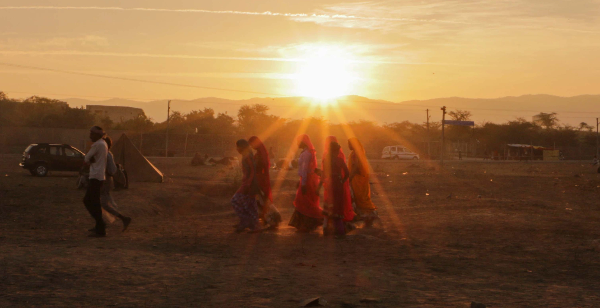

Experience India’s greatest tribal gathering
Pushkar Camel Fair
Pushkar Fair
Pushkar Fair Dates 2026
Photography
Local people & Communities
Pushkar Tours
Pushkar Fair Photo Gallery
Contact Us
Tours
Glimpses of India tour
Divine Diwali tour
Haveli Diwali tour
Pushkar Fair Photo Gallery
Camel herder at the fair
Pushkar Fair event

Sunset in Pushkar
Pushkar Sarovar
Local people and communities
Camels at sunrise